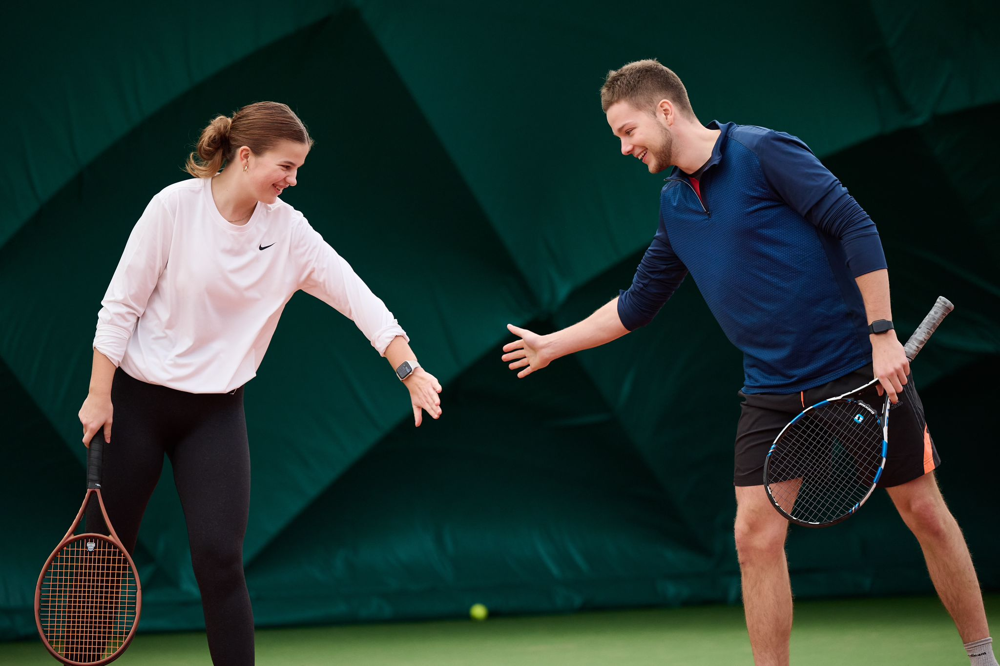
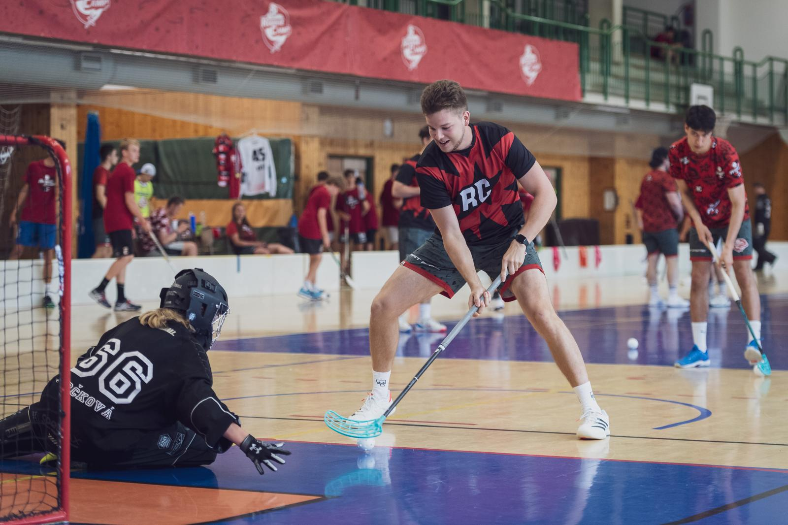

WHO AM I
I’m Martin Kafka, a 25-year-old university student from the Czech Republic with a strong passion for data analysis. My expertise lies in data wrangling, statistical modeling, and business analytics, which I use to drive insights and enhance decision-making. With a solid foundation in computing for data science and a keen interest in machine learning, I strive to transform raw data into meaningful stories.
🔹 Experienced in ETL processes, SQL, and Python
🔹 Interested in predictive analytics & geospatial data
🔹 Enthusiastic about data-driven solutions for real-world problems
MY STORY
My academic journey began in nuclear physics, where I struggled with the abstract nature of numbers—I couldn’t touch them, visualize them, or fully grasp their meaning. This led me to transition into data analysis and statistics, where I found my passion in uncovering patterns, making predictions, and drawing meaningful insights from raw data. For my Master’s studies, I moved to Bolzano, Italy, where I delved deeper into problem-solving, advanced machine learning and deep learning techniques, and honed my skills in data visualization. This international experience not only expanded my technical expertise but also reinforced my ability to approach complex challenges with a structured and analytical mindset.

SKILLS
Data Analysis
I specialize in extracting valuable insights from data through statistical modeling, machine learning, and business analytics. I primarily work with R and Python for both analytical and visualization purposes, ensuring data-driven decision-making.
Leadership
Through my experience as a sports team coach, a member of a grant project, and a musician in a band, I have developed strong leadership and communication skills. I excel at problem-solving, team collaboration, and decision-making, ensuring efficiency and a structured approach in dynamic environments.
USING NOW:

Python

R

PowerBI

Microsoft Office

SQL
Git
LANGUAGES:

CZECH - native speaker

ENGLISH - Full professional proficiency

GERMAN - B1
EDUCATION

2022 - 2025 | MSc in Computing for Data Science
Free University of Bozen-Bolzano
Final Grade: TBD
PROJECTS & PUBLICATIONS
2020 - 2021 | IGA - Financing of Higher Eduaction
Impact of financing on quality of eduaction in higher education.
2022 | Bachelor thesis
Analysing the relationship between the teachers publication activity and their evaluations

2022 | Publication - He who researches well, teaches well: myth or not?
An article exploring the connection between research activity and teaching quality.
WORK EXPERIENCE

2022 | Internship
Designed and implemented dashboards to visualize and analyze sales data trends.
HOBBIES
Floorball
Coppa Italia champion, youth team runner-up in Czech Republic, currently playing for SSV Bozen.
Coach
Licensed trainer with experience in Czech and Italian academy teams.

Skiing Instructor
Certified instructor with experience in primary school skiing courses.
Healthy Lifestyle
As a Type 1 diabetic, staying active helps me manage my condition.
Other Sports
Actively playing volleyball, tennis, and doing fitness.
Music
Playing piano since childhood, performed solo & in a Rammstein revival band.


